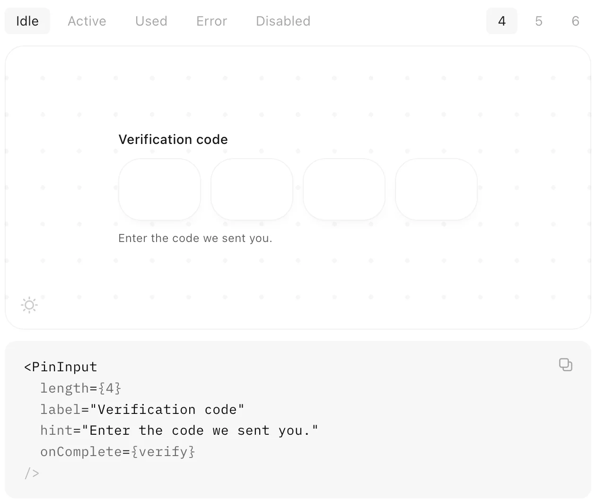
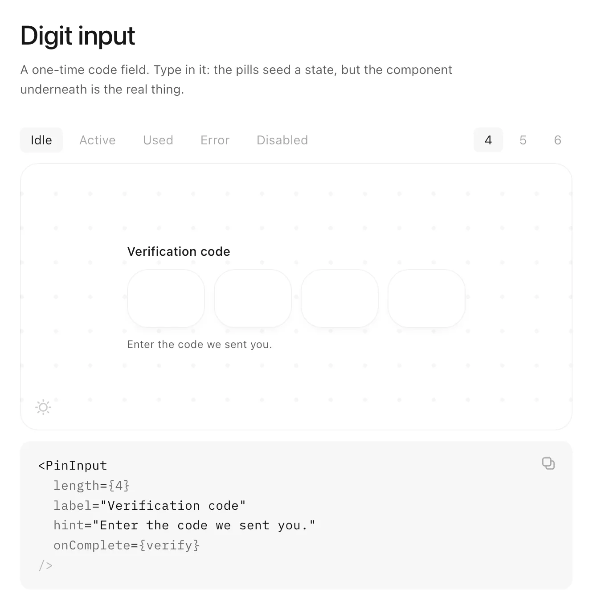
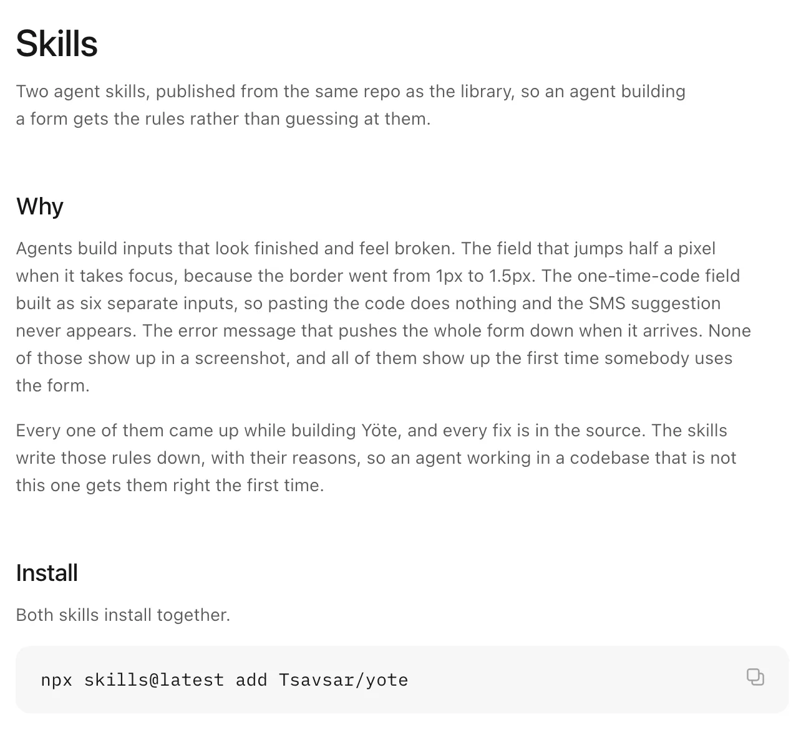

Yöte
Form inputs for React. Nine fields, one set of props, zero dependencies, 24KB. Every state is designed and every edge case I could find is handled.
Yöte
Form inputs for React, done properly

Intro
Inputs are the part of a product everyone assumes is done. Then you paste a one-time code and nothing happens, or a field jumps half a pixel when it takes focus, or the error pushes the whole form down. None of that shows up in a screenshot. All of it shows up the first time somebody actually uses the form.
Radix, Base UI and Ark already own accessible headless primitives, and I wasn't going to compete with them. What none of them ship is the craft: the error transition, the focus ring timing, the way a digit lands in a cell. That's what Yöte is. Install it and the field already feels right.
The name is from the Finnish syöte, meaning input, and it's pronounced "yoat". It's Luotain's sister project, and its fields are sized to sit in the same 380px column Luotain's forms use. KernUI is where I learned to think in tokens, Luotain is where I built a whole product on them, and Yöte is the bit I pulled out so anyone can use it.
Try it
These are the real components from the npm package, not recordings. They follow the site's theme toggle too.
One vocabulary
The rule I cared about most is that the second field you use needs no new learning. Every field takes the same props: value, onChange, label, hint, error, disabled, size, classNames. onChange always hands you the value, never the event, so nobody has to remember which component gives them a synthetic event.
ref always lands on the real input, never on a wrapper div, so form libraries and focus management just work. Every state is also a data attribute (data-focused, data-filled, data-invalid), so you can style any of them from outside without asking me for a prop.

The docs work the same way. The pills seed a state, but the field underneath is the real component, and you can type in it.
Decisions
One input, not one per cell
The code field looks like four boxes, but there's one real <input> stretched invisibly across all of them. Most hand-rolled OTP fields render one input per cell, and that quietly breaks three things people rely on: pasting the code, autocomplete="one-time-code", and the keyboard suggestion on iOS and Android that fills it straight from the SMS. The cells are just a drawing of the value. The hidden input also sits at 16px so iOS doesn't zoom the page when you tap it.
Typed, not picked
There's a date field but no calendar. Almost everyone knows their birthday faster than they can find it in a grid. You type the digits and the field puts the slashes in for you, and the same pattern drives the placeholder, the mask and the max length, so they can't drift apart.
The card field regroups itself
Most cards are four groups of four, but Amex is 4-6-5. The field works out the brand from the first digits, changes the grouping, and swaps the mark as you type. There are two spaces between groups rather than one, because at 14px a single space was too tight to tell the groups apart at a glance.
Errors that replay
If you submit the same wrong code twice, the error message is identical, so a normal component does nothing the second time and it looks like the button broke. There's an errorKey prop so the shake plays again on every failed attempt. Try it on the code field above.
Motion
Everything runs on one ease-out curve, cubic-bezier(0.23, 1, 0.32, 1), and short durations: 140ms for a digit landing, 160ms for borders and focus rings, 280ms for the error shake. These are fields you type into dozens of times a day, so anything longer starts to feel like waiting. Digits come in from 0.9 scale rather than 0, because nothing in the real world appears out of nowhere. With reduced motion turned on, the shake is gone and a digit just fades in.
Your classes win
All of Yöte's CSS sits in a cascade layer, and unlayered CSS beats layered CSS whatever the specificity. So your Tailwind utility or your own class overrides mine with no !important and no specificity fight. It also meant a rule for me: single-class selectors only, so one utility is always enough to win.
The bug that cost a day
The focus ring is built from other tokens, and a CSS variable resolves where it's declared rather than where it's used. I'd declared the ring only in the light theme, so the page baked a white ring into it and every dark container inherited that. The inputs were correct and the ring was wrong. Now every composed token is restated in every theme block, and the agent skill below checks for exactly this.
Scope
Yöte does fields. It doesn't do form state or validation logic, or the things that sit on top of a field rather than in it. The library renders your error and never decides what one is. If a feature would need it to hold state, guess a locale, or decide whether something is correct, that's the line, and it's written in the README so there's something to point at when the temptation shows up.
That's also why it's 1.0 rather than a long 0.x. There's no roadmap waiting to reshape the API. A narrow library that's finished beats a broad one that's forty percent done.
For agents
A lot of UI now gets built by an agent, and agents build inputs that look finished and feel broken. So the repo ships two agent skills. yote-ui covers using the components in an app. design-input is the one that matters: it teaches an agent the rules the nine fields were built on, like the states, what must never shift, and what never ships. It designs against your token names and reads your stylesheet first, so a project with its own accent gets specs in its own colour.

Next
The claims above are checked by hand right now, which isn't good enough for a library that says every edge case is handled. Next is a test suite for the behaviour that matters most: paste and autofill on the code field, the card regrouping, and typed dates.
connect
I’m always up for talking to thoughtful people about design systems, interfaces, and the code they turn into. Reach me at shatermt@gmail.com, or find me on X and GitHub.